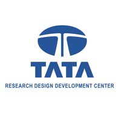
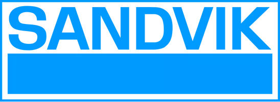
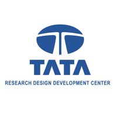
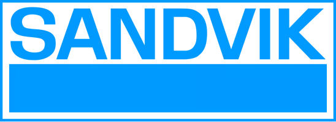
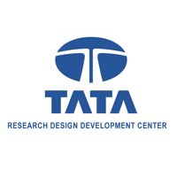
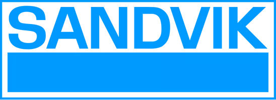

About us
Research
Deformation behaviour of duplex stainless steels
Duplex stainless steel are a highly alloyed two-phase material
with nearly equal austenite (fcc) and ferrite (bcc) phase
fractions. They are extensively used in oil and gas
industries. In collaboration with Sandvik, we are studying the
deformation behaviour of SAF906. We aim to understand (i)
deformation mechanisms and texture evolution of individual
phases (ii) strain partitioning among the phases (iii) effect
of orientation relationships on the texture evolutions and
(iv) the mechanical anisotropy evolution.
Deformation twinning in hcp materials
Deformation twinning is a strain accommodating mechanism along with crystallographic slip in many crystal systems. They are more commonly encountered in crystals with lower symmetry and with access to less than five independent slip systems such as hexagonal closed packed and tetragonal crystal systems. At a fundamental level, we are trying to address the role of local grain interactions on the nucleation and growth of deformation. We are also studying the interaction of deformation twins with precipitates in precipitation strengthened Mg alloys and their role on the tension/compression asymmetry. We are also looking into the long standing unanswered question about the role of grain size on the twinning behavior.
Deformation twinning is a strain accommodating mechanism along with crystallographic slip in many crystal systems. They are more commonly encountered in crystals with lower symmetry and with access to less than five independent slip systems such as hexagonal closed packed and tetragonal crystal systems. At a fundamental level, we are trying to address the role of local grain interactions on the nucleation and growth of deformation. We are also studying the interaction of deformation twins with precipitates in precipitation strengthened Mg alloys and their role on the tension/compression asymmetry. We are also looking into the long standing unanswered question about the role of grain size on the twinning behavior.
Virtual testing of materials: multiscale linking
Finite element simulations of metal forming operations require
constitutive models of underlying metallic sheet materials
capable of realistically capturing the plastic anisotropy due
to the underlying crystallographic texture. For the sake of
computational efficiency, the material response is implemented
in the form of yield criteria. These yield criteria often have
a large number of material parameters that need to be obtained
from a series of complex mechanical tests. Often such tests
are either inaccessible or not easy to perform. Virtual
material testing can then be used as a framework where one can
perform a series of numerical experiments on statistically
representative microstructures with high fidelity material
models such as crystal plasticity models to obtain the
required parameters for the anisotropic yield criteria. We
write user material subroutine VUMAT to be implemented in
commercial finite element software, ABAQUS for anisotropic
yield criteria. The material parameters for the yield criteria
are obtained using crystal plasticity model. Going forward, we
plan to develop a more comprehensive platform where users can
choose the right material model at the microstructural scale
and the appropriate yield criteria at the sample scale.
Machine learning assisted prediction of mechanical response of
materials.
Recently, we have started working on applying data science
tools to solve problems related to materials. In particular,
we have been looking into the quantitative prediction of
processing-structure-property correlations. We are currently
tackling the issue of the dimensionality curse of big data
encountered in materials science with particular emphasis on
the intrinsic dimensionality of microstructure data. We are
also looking at ways to apply deep learning algorithms to
build reduced order models to accurately predict the local
stress/strain distributions in two phase materials. We hope to
develop a data enabled framework to predict the initiation and
damage in engineering materials accurately.
Grain boundaries
Grain boundaries are essential features of microstructures. A
better understanding of the mechanical response of GBs is
required if we are interested in understanding mechanics of
microstructures. We have been looking at two aspects
What is the intrinsic stress state of a grain boundary ?
What is the width of the grain boundary influence zone?
What is the intrinsic stress state of a grain boundary ?
What is the width of the grain boundary influence zone?
Funding

 




